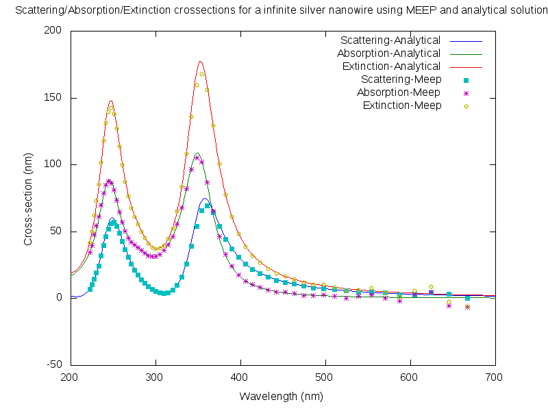
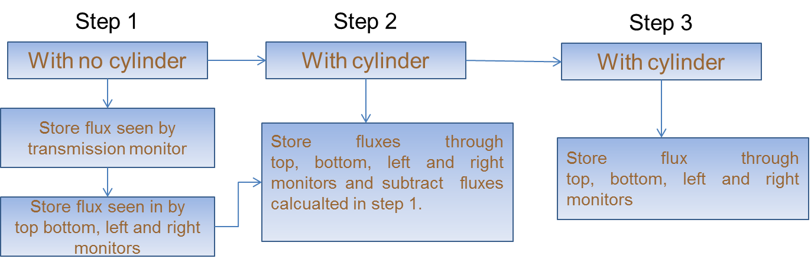

Scattering / extinction / absorption cross-sections of silver nanowires (infinite cylinders) using meep
Posted on Wed 01 June 2011 in Plasmonics
Particles scatter and absorb electromagnetic radiation. One often needs to compare the amount of scattering/absorption/extinction for particles of different shapes, composition, sizes and incident light properties (polarization, frequency and angle). In this regard, the concept of cross-sections comes into picture. There are three types of cross-sections, 1) scattering 2) absorption and 3) extinction. All of them have units of area, m^2, and provide a measure to quantify scattering/absorption process. Here using MEEP I calculate the crossections of silver nanowires and compare them with numerical solution (code from Bohren and Hauffman book).
Comparison of meep results with analytical results for silver nanowires

To achieve this, I wrote a meep code that performs a 2D simulation (x-y) with the cylinder axis along z axis with sources and monitors places as shown below. The source is a line source which travels along y direction and has polarization with electric field along x axis (along radius). I also use mirror-symmetries anti-symetry along X direction (which reduces the simulation time by half). PML layers are used on all sides. Calculation of cross-sections involves creating multiple 1-d flux monitors and running multiple simulations as shown below.

I have shared the project at github.
You would need ubuntu like system with meep and octave installed. Shell script will do all the work.